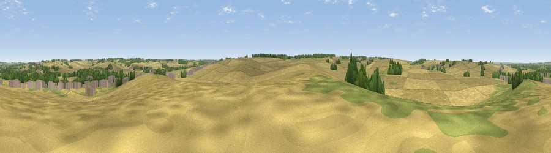

Viewpoint near Ickleton
#39419 in England · top 44% of its area beats it · near IckletonThe view, rendered

A 360° render of this exact spot computed from the terrain model, tree cover and land cover — summer colours, afternoon light, calibrated against photographs of famous viewpoints. Real trees, hedges and buildings will differ in detail.
The panorama
Grey silhouette: terrain skyline in each direction (720 bearings, Earth curvature and refraction included). Dashed green: skyline with trees (+15 m) and buildings (+8 m) as obstacles. Blue strip: how far the ground is visible on each bearing.
Where the view opens
Wedge length = distance to the farthest visible ground on that bearing (vegetation-aware). Rings at 10, 25 and 50 km.
What fills the view
78% cropland · 10% grassland · 8% woodland · 4% built-up
Angular shares of the visible panorama (visual magnitude), not map area. Landscape diversity 0.33 (0–1 Shannon).
Key numbers
More beautiful places nearby
The staircase of upgrades: each row has a higher view potential than everything closer. Driving times are estimates from straight-line distance, calibrated against real road routing — check an actual route before setting out.
| Place | Direction | Drive | Score |
|---|---|---|---|
| Pepperton Hill | WNW · 3 km | ~8 min | 44.0 |
| Viewpoint near Heydon | WSW · 7 km | ~15 min | 50.0 |
| Viewpoint near Stapleford | N · 11 km | ~21 min | 54.8 |
| Viewpoint near Royston | W · 15 km | ~27 min | 56.6 |
| Viewpoint near Hexton | WSW · 39 km | ~58 min | 65.4 |
| Viewpoint near Church End | WSW · 53 km | ~75 min | 65.8 |
| Beacon Hill | WSW · 59 km | ~81 min | 74.1 |
| Viewpoint near Halton | WSW · 68 km | ~92 min | 74.3 |
52.05736, 0.17804 · source: screening · position refined by local search. Computed location — check access rights before visiting.